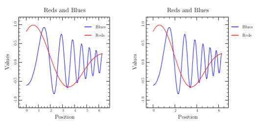
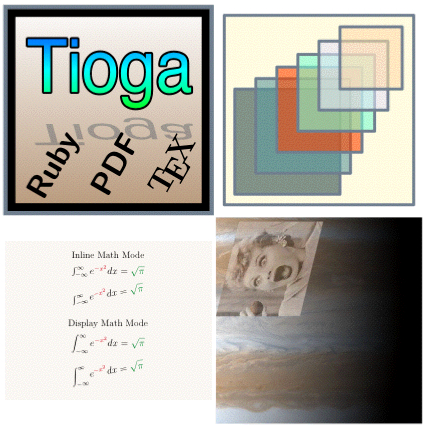
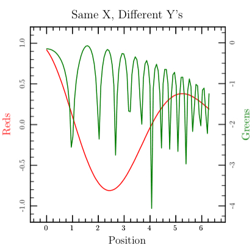
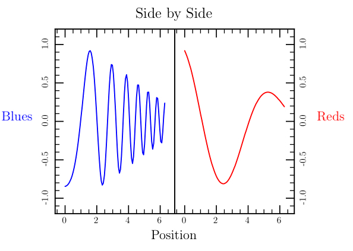
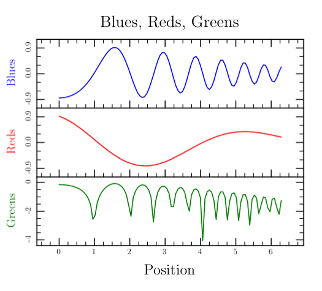
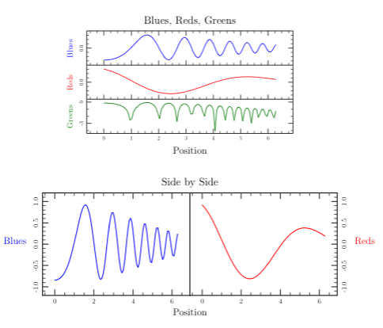

class Tioga::Figures_and_Plots
See also Tutorial::Figures and Tutorial::Plots.
Public Instance Methods
The context routine saves 'state', executes the given block, and then restores state. The state being saved and restored consists of the attributes defining the page setup (frame, bounds, axes), graphics (clip region, stroke and fill colors, line width and type, etc.), axis label settings, and legend layout settings. Some of the things it saves and restores are arrays (such as the optional arrays of locations for major tick marks on the axes). In these cases, context will save and restore the pointer to the array, but it doesn't do anything about the contents of the array. Similarly, for text strings such as the title, it will save and restore the pointer but not the contents.
Among the things that it does not save/restore is the saved legend information (as opposed to the legend layout attributes which are saved). This makes it possible to gather legend information from a subplot while still isolating it in its own context.
Routines such as #show_plot, subplot, and subfigure make use of context to prevent side-effects from the execution of the code body 'leaking' out to pollute the caller's environment. The practical result is that in writing plotting routines, you can safely change various settings without needing to restore the old values when you finish. This becomes critical when you begin to combine several plots into a composite plot.
# File lib/Tioga/Figures_and_Plots.rb, line 48 def context (&cmd) end
Sets the #root_figure flag to
false. Is called on entry to the subfigure routine.
Provided as a convience for your plotting routines.
# File lib/Tioga/Figures_and_Plots.rb, line 161 def doing_subfigure end
Sets the #in_subplot flag to
true. Is called on entry to the subplot routine.
Provided as a convience for your plotting routines.
# File lib/Tioga/Figures_and_Plots.rb, line 153 def doing_subplot end
Flag starts false and is set to true by the #doing_subfigure
routine which is called on entry to the subfigure routine.
This is simply provided as a convenience for routines that need to know
whether they are being called as a subfigure or as a top-level figure. Same
as not root_figure.
# File lib/Tioga/Figures_and_Plots.rb, line 253 def in_subfigure end
Flag starts false and is set to true by the #doing_subplot
routine which is called on entry to the subplot routine. This is
simply provided as a convenience for routines that need to know whether
they are being called as a subplot or as a top-level plot. Same as not
root_plot.
# File lib/Tioga/Figures_and_Plots.rb, line 271 def in_subplot end
Calls both rescale_text and rescale_lines with the given factor.
# File lib/Tioga/Figures_and_Plots.rb, line 52 def rescale(factor) end
Flag starts true and is set to false by the #doing_subfigure
routine which is called on entry to the subfigure routine.
This is simply provided as a convenience for routines that need to know
whether they are being called as a subfigure or as a top-level figure.
Same as not in_subplot.
# File lib/Tioga/Figures_and_Plots.rb, line 244 def root_figure end
Flag starts true and is set to false by the #doing_subplot
routine which is called on entry to the subplot routine. This is
simply provided as a convenience for routines that need to know whether
they are being called as a subplot or as a top-level plot. Same as not
in_subplot.
# File lib/Tioga/Figures_and_Plots.rb, line 262 def root_plot end
Makes a series of calls to show the frame edges (show_top_edge, show_left_edge, etc.)
# File lib/Tioga/Figures_and_Plots.rb, line 235 def show_edges end
The first action of #show_plot is to call set_bounds to set up the figure coordinates for the plot. Then, inside a call to context so that the current state will be restored later, it calls clip_to_frame followed by the block defining the plot. Finally, it calls #show_plot_box to take care of the axes and labels.
# File lib/Tioga/Figures_and_Plots.rb, line 17 def show_plot(bounds=nil,&cmd) end
Makes a series of calls to show the axes, edges, title, and axis labels. This routine is called by #show_plot after the contents of the frame have been finished.
# File lib/Tioga/Figures_and_Plots.rb, line 169 def show_plot_box end
Adjusts margins according to the entries in the dict argument,
executes the plot definition, then calls show_legend. The
dictionary entries are all optional, and default values are taken from the
legend_defaults dictionary. The margin sizes are given as
fractions of the current frame. The plot_scale applies to the
entire plot including the legend. The legend_scale only
applies to the legend.
Dictionary Entries
'legend_top_margin' => a_float 'legend_bottom_margin' => a_float 'legend_left_margin' => a_float 'legend_right_margin' => a_float 'plot_top_margin' => a_float 'plot_bottom_margin' => a_float 'plot_left_margin' => a_float 'plot_right_margin' => a_float 'plot_scale' => a_float 'legend_scale' => a_float
Examples
def legend_outside read_data show_model_number t.show_plot_with_legend('legend_scale' => 1.3) { reds_blues } end def legend_inside read_data show_model_number t.show_plot_with_legend( 'legend_left_margin' => 0.7, 'legend_scale' => 1.3, 'plot_right_margin' => 0) { reds_blues } end def legends t.subfigure('top_margin' => 0.6) do t.rescale(0.5) t.subplot('right_margin' => 0.6) do t.show_plot_with_legend( 'legend_left_margin' => 0.7, 'legend_scale' => 1.3, 'plot_right_margin' => 0) { reds_blues } end t.subplot('left_margin' => 0.56) do t.show_plot_with_legend('legend_scale' => 1.3) { reds_blues } end end end

# File lib/Tioga/Figures_and_Plots.rb, line 228 def show_plot_with_legend(dict=nil, &cmd) end
This is identical to #show_plot except it doesn't do clip_to_frame before calling the plot command.
# File lib/Tioga/Figures_and_Plots.rb, line 24 def show_plot_without_clipping(bounds=nil,&cmd) end
Inside a call to context, subfigure first calls #doing_subfigure, then calls set_subframe with the margins, and finally executes the block of commands for the figure.
Example
def subfigures t.rescale_text(0.45) t.subfigure('right' => 0.5, 'bottom' => 0.5) { icon } t.subfigure('right' => 0.5, 'top' => 0.5) { t.stroke_color = White; math_typesetting } t.subfigure('left' => 0.5, 'bottom' => 0.5) { transparent_squares } t.subfigure('left' => 0.5, 'top' => 0.5) { jpg_image_transparent } end

# File lib/Tioga/Figures_and_Plots.rb, line 79 def subfigure(margins=nil,&cmd) end
Inside a call to context, subplot first calls #doing_subplot, then calls set_subframe with the margins, and finally executes the block of commands for the plot.
Examples
def two_yaxes t.show_title('Same X, Different Y\s'); t.no_title t.show_xlabel('Position'); t.no_xlabel t.subplot { t.yaxis_loc = t.ylabel_side = LEFT; t.no_right_edge; reds } t.subplot { t.yaxis_loc = t.ylabel_side = RIGHT; t.no_left_edge; greens } end

def side_by_side t.do_box_labels('Side by Side', 'Position', nil) t.ylabel_angle = -90 t.ylabel_shift += 1 t.subplot('right_margin' => 0.5) { t.yaxis_loc = t.ylabel_side = LEFT; t.right_edge_type = AXIS_LINE_ONLY; blues } t.subplot('left_margin' => 0.5) { t.yaxis_loc = t.ylabel_side = RIGHT; t.left_edge_type = AXIS_LINE_ONLY; reds } end

def rows t.do_box_labels('Blues, Reds, Greens', 'Position', nil) t.rescale(0.8) num_plots = 3 t.subplot(t.row_margins('num_rows' => num_plots, 'row' => 1)) do t.xaxis_type = AXIS_WITH_TICKS_ONLY blues end t.subplot(t.row_margins('num_rows' => num_plots, 'row' => 2)) do t.xaxis_type = AXIS_WITH_TICKS_ONLY t.top_edge_type = AXIS_HIDDEN reds end t.subplot(t.row_margins('num_rows' => num_plots, 'row' => 3)) do t.top_edge_type = AXIS_HIDDEN greens end end

def trio t.rescale(0.6) t.subplot( 'bottom_margin' => 0.55, 'left_margin' => 0.15, 'right_margin' => 0.15) { rows } t.subplot('top_margin' => 0.55) { side_by_side } end

# File lib/Tioga/Figures_and_Plots.rb, line 145 def subplot(margins=nil,&cmd) end